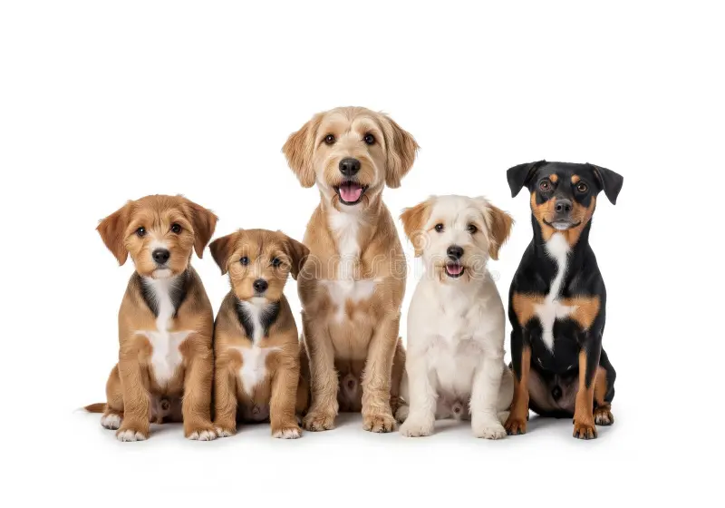

Nuestros Perritos en Adopción
Conoce a los peludos que buscan un hogar lleno de amor.
| Nombre | Raza | Edad Aproximada | Tamaño |
|---|---|---|---|
| Max | Labrador | 3 años | Grande |
| Luna | Cruza | 1 año | Mediano |
| Rocky | Terrier | 5 años | Pequeño |
Glosario de Rescate Canino
Términos básicos que manejamos en la fundación:
- Casa de Acogida
- Hogar temporal donde un perro rescatado recibe cuidados y socializa mientras encuentra una familia definitiva.
- Esterilización
- Procedimiento quirúrgico seguro que evita la reproducción y previene enfermedades graves en los animales.
- Protocolo de Vacunación
- Esquema de vacunas esenciales (como la antirrábica y séxtuple) para proteger al perro de virus mortales.
